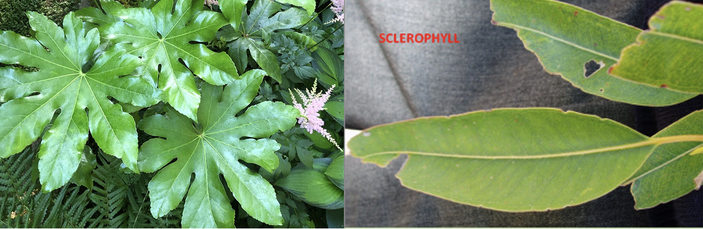
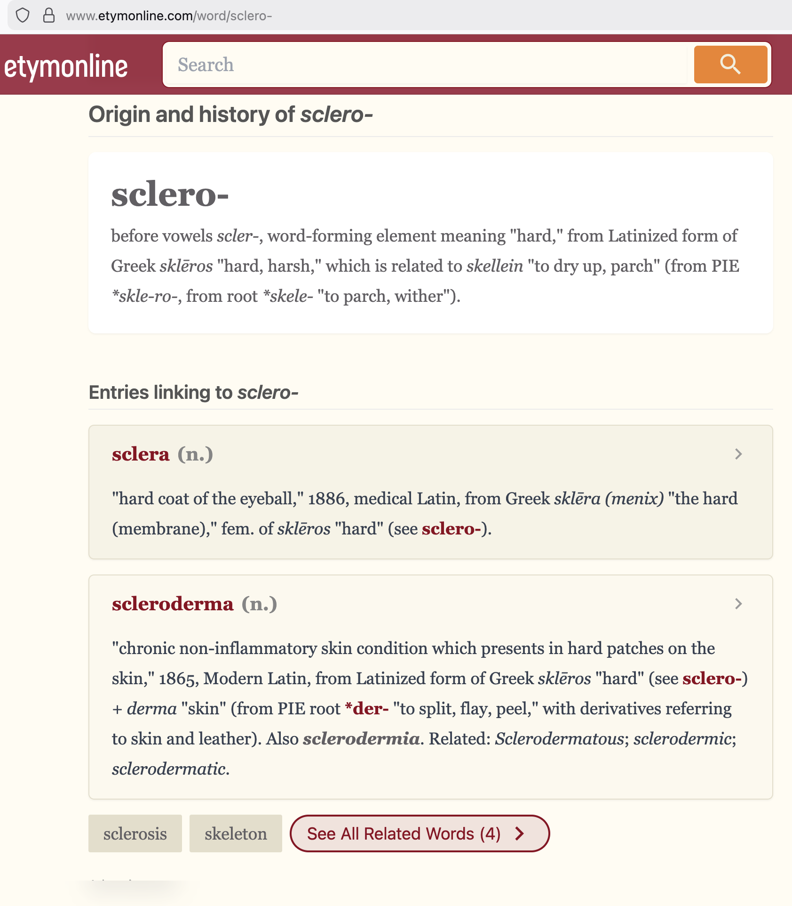
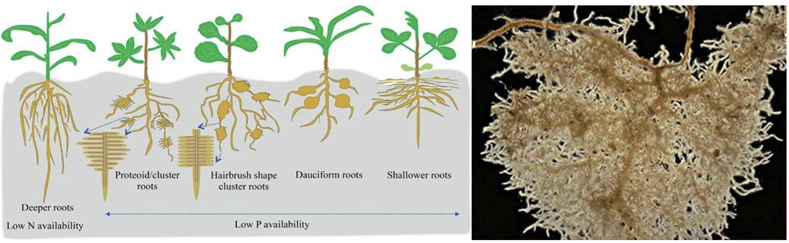
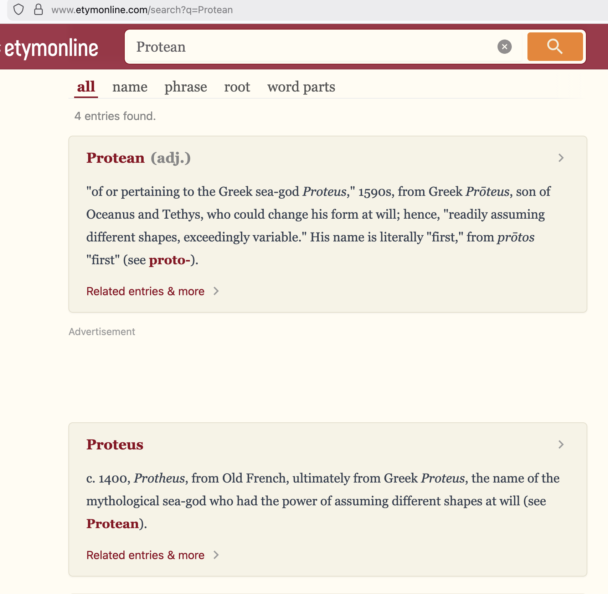
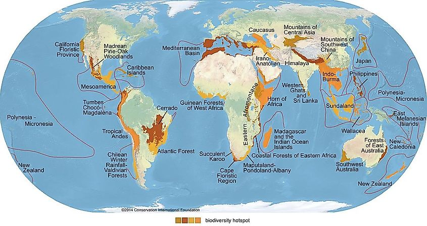
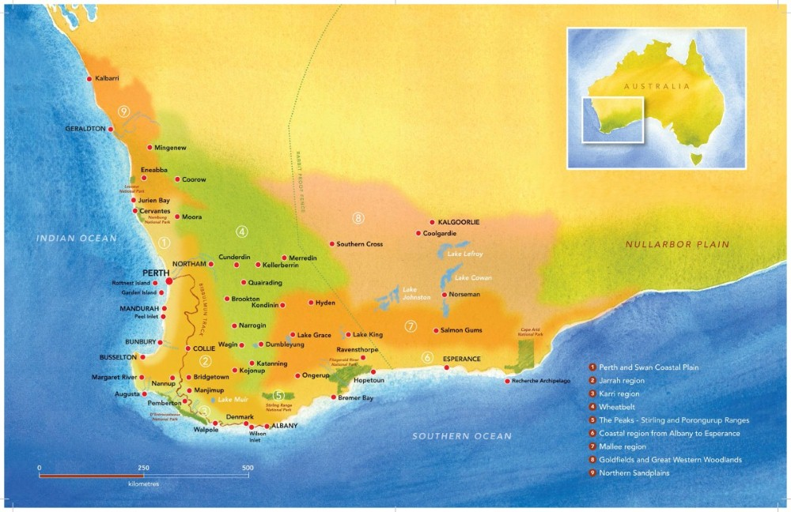
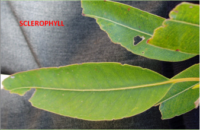
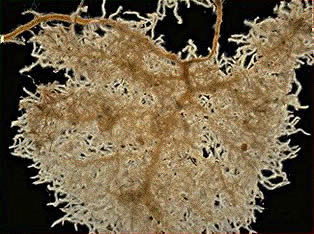
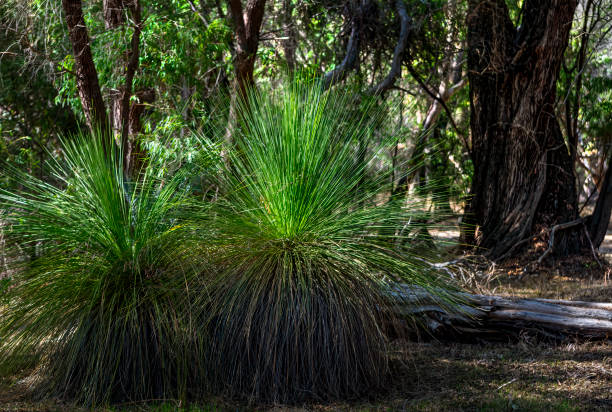
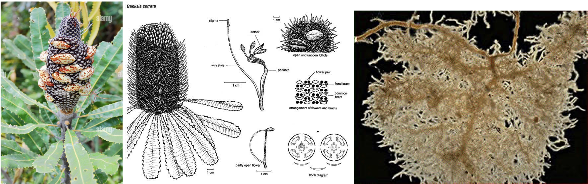

Plant Adaptations to Local and South-West WA Ecosystems
Term 1, Week 3, Lesson 3
Do Now
In your book, look at the two images below and answer the question:
Compare these two leaves. Which one do you think would survive better in a hot, dry environment? Explain why.

| Leaf | Description | Would it survive in hot, dry conditions? Why? |
|---|---|---|
| Leaf A (broad, soft) | ||
| Leaf B (hard, waxy) |
You have 3 minutes.
Daily Review
Answer the following 5 multiple choice questions in your book:
- An adaptation that involves an internal body process is called:
- Structural
- Behavioural
- Physiological
- Environmental
- Which of the following is a structural adaptation?
- A bilby being active at night
- A kangaroo producing concentrated urine
- A thorny devil’s spiny body
- A snake injecting venom
- A bird migrating to warmer areas in winter is an example of which type of adaptation?
- Structural
- Behavioural
- Physiological
- Physical
- Which statement about adaptations is correct?
- Adaptations are learned during an organism’s lifetime
- Adaptations are inherited traits that develop over many generations
- All organisms have the same adaptations
- Adaptations are temporary changes
- The production of toxic oils by eucalyptus leaves is an example of:
- A structural adaptation
- A behavioural adaptation
- A physiological adaptation
- A learned behaviour
Learning Intentions
Today we are learning about the specific adaptations that plants have developed to survive in local and south-west Western Australian ecosystems, where soils are nutrient-poor and summers are hot and dry.
Success Criteria
You will be successful if you have:
Keywords
- Sclerophyll
- A type of vegetation with hard, thick, waxy leaves that are adapted to reduce water loss. From the Greek words “sclero” (hard) and “phyllon” (leaf).

- Proteoid roots (cluster roots)
- Dense clusters of fine, short roots that greatly increase the surface area for absorbing nutrients, especially phosphorus, from poor soils.


- Biodiversity hotspot
- A region with an exceptionally high number of species found nowhere else, that is also under significant threat. South-west WA is one of only 36 global biodiversity hotspots.

- Mediterranean climate
- A climate with hot, dry summers and cool, wet winters — the dominant climate pattern in south-west WA.
- Transpiration
- The loss of water vapour from a plant’s leaves through small pores called stomata.
Learning Activities
Activity 1 — I DO: The South-West WA Environment
Why Is South-West WA Special?
South-west Western Australia is recognised as one of the world’s 36 biodiversity hotspots. It contains over 7,000 plant species, and around 50% of them are found nowhere else on Earth (endemic species).

The Environmental Challenges
Plants in south-west WA face two major challenges:
| Challenge | Details |
|---|---|
| Nutrient-poor soils | The soils are among the oldest and most weathered on Earth. They are extremely low in phosphorus and nitrogen — essential nutrients for plant growth. |
| Seasonal drought | The Mediterranean climate brings hot, dry summers (often 3–5 months with very little rain). Plants must survive extended periods without water. |
Key Plant Adaptations
1. Sclerophyllous Leaves
Sclerophyll means “hard leaf” — these are tough, leathery leaves with a thick, waxy cuticle.

- The thick cuticle reduces water loss through transpiration.
- Many sclerophyll leaves are small or narrow, further reducing the surface area exposed to the sun.
- Examples: jarrah (Eucalyptus marginata), marri (Corymbia calophylla), banksia species.
Type of adaptation: Structural
2. Proteoid (Cluster) Roots
Proteoid roots are dense mats of fine rootlets that form tight clusters.

- They massively increase the surface area available for absorbing nutrients.
- They release organic acids that help dissolve phosphorus locked in the soil, making it available to the plant.
- Examples: banksia, hakea, grevillea, dryandra — all members of the Proteaceae family.
Type of adaptation: Structural and physiological
3. Deep Root Systems
Some plants develop deep tap roots that can reach groundwater far below the surface.
- This allows them to access water during the long, dry summer months when surface soil is completely dry.
- Example: tuart trees (Eucalyptus gomphocephala) near Perth have roots that can reach depths of 10–20 metres.
Type of adaptation: Structural
4. Reduced or Modified Leaves
Some species have evolved leaves that are modified to minimise water loss even further:
| Plant | Leaf Modification | How It Helps |
|---|---|---|
| Allocasuarina (sheoak) | Tiny, scale-like leaves pressed against the stem; photosynthesis occurs in the green stems | Dramatically reduces surface area and water loss |
| Acacia (wattle) | Flattened leaf stalks (phyllodes) replace true leaves | Phyllodes are tougher and lose less water than compound leaves |
| Xanthorrhoea (grass tree) | Long, narrow, tough leaves with a waxy coating | Reduced surface area; waxy coating prevents water loss |

Local Ecosystems Summary
| Ecosystem | Key Plants | Main Adaptations |
|---|---|---|
| Jarrah forest | Jarrah, marri, banksia | Sclerophyllous leaves, deep roots, proteoid roots |
| Kwongan heathland | Banksia, hakea, grevillea, dryandra | Proteoid roots, reduced leaves, low growth habit |
| Perth coastal plain | Tuart, banksia, wattle | Deep tap roots, phyllodes, sclerophyllous leaves |
Check for Understanding
Quick match: Link each adaptation to the environmental challenge it addresses:
| Adaptation | Challenge it addresses |
|---|---|
| Sclerophyllous leaves | A) Nutrient-poor soils |
| Proteoid roots | B) Hot, dry summers |
| Deep tap roots | C) Lack of surface water in summer |
Answers: Sclerophyllous leaves → B, Proteoid roots → A, Deep tap roots → C
Activity 2 — WE DO: Analysing a Banksia Species
As a class, we will examine images and information about a banksia species and identify its adaptations.

Guided Analysis Table
For each feature of the banksia, identify:
| Feature | Description | Type of Adaptation (S/P) | Environmental Challenge It Addresses |
|---|---|---|---|
| Leaves | Hard, serrated, with a waxy cuticle | ||
| Roots | Dense proteoid root clusters | ||
| Follicles | Woody, fire-resistant seed cases | ||
| Growth form | Low, spreading shape in heathland |
Discussion
- Why does the banksia have so many different adaptations?
- How do the adaptations work together to help the plant survive?
- Would a banksia survive well in a tropical rainforest? Why or why not?
Activity 3 — YOU DO: Plant Adaptations Table
Complete the worksheet: 133-plant-adaptations-sw-wa-you-do.docx
You will complete a table linking plant adaptations to their environmental challenge, type of adaptation, and example species.
Work independently. You have 10 minutes to complete the worksheet.
Notes
Use this space to write any important points from today’s lesson.
Reflection
- South-west WA is recognised as a:
- Tropical rainforest
- Global biodiversity hotspot
- Coral reef ecosystem
- Tundra ecosystem
- Sclerophyllous leaves help plants by:
- Absorbing more sunlight
- Reducing water loss through transpiration
- Attracting more pollinators
- Growing faster in nutrient-poor soils
- Proteoid roots are an adaptation to:
- Hot, dry summers
- Flooding
- Nutrient-poor soils
- Strong winds
- Which of these plants uses deep tap roots to access groundwater?
- Spinifex
- Tuart tree
- Mangrove
- Water lily
- Short answer: Why do many south-west WA plants have hard, waxy leaves?
Home-study
Find out the name of one plant species that grows in your local area. Identify one adaptation it has and explain how that adaptation helps it survive in the local environment. Write your answer in 3–4 sentences.